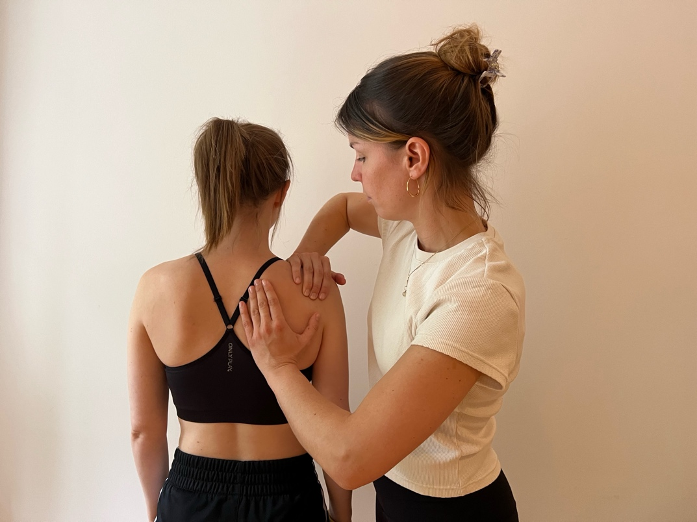
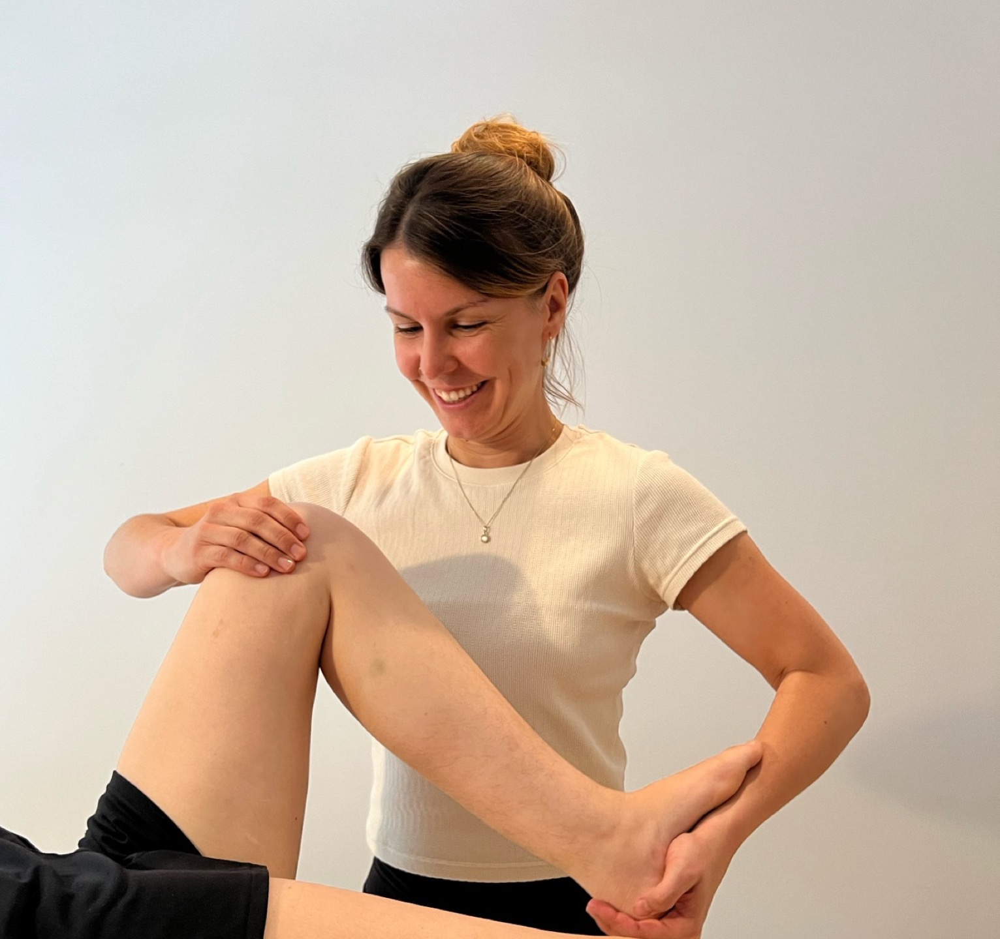
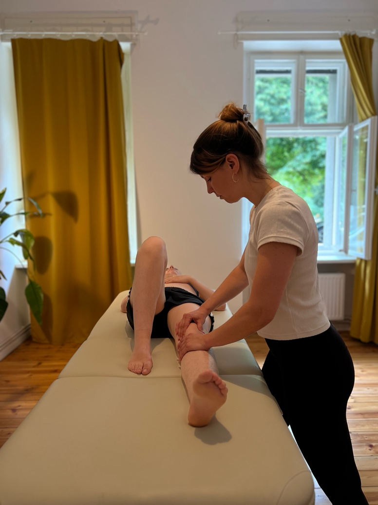
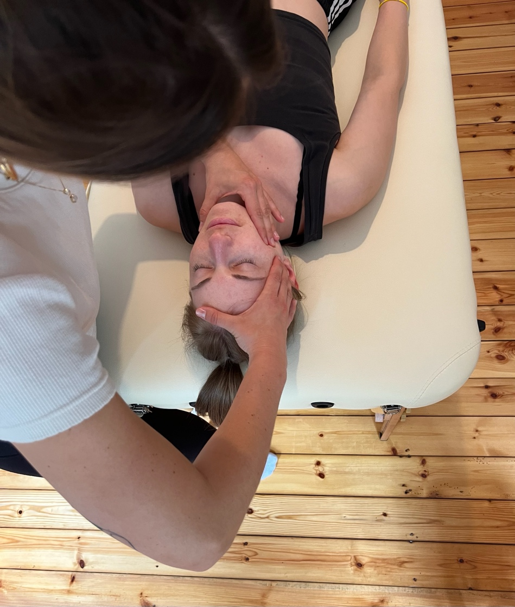
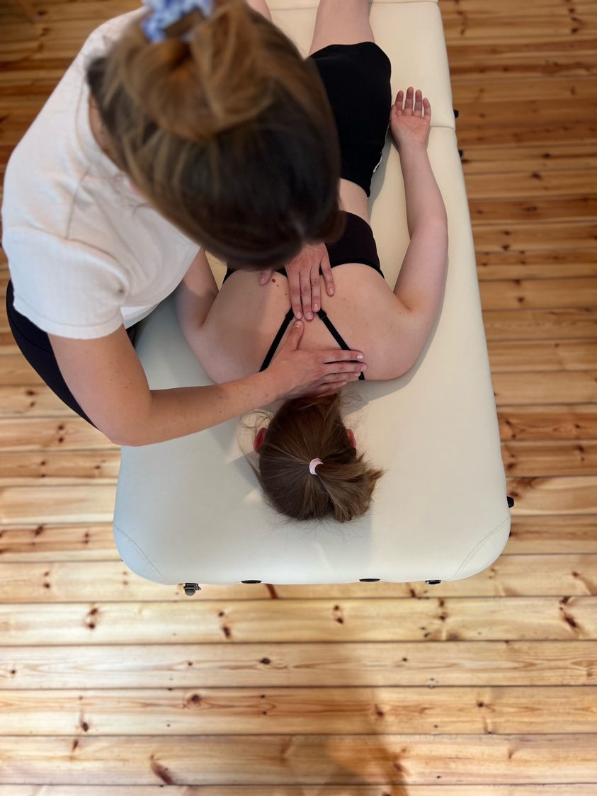
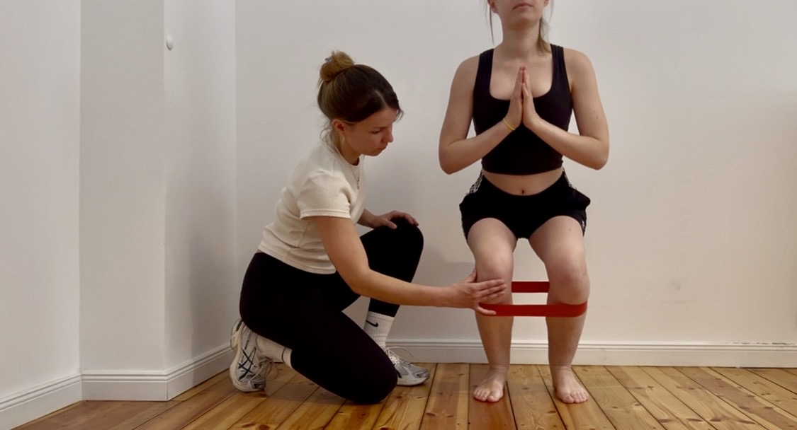
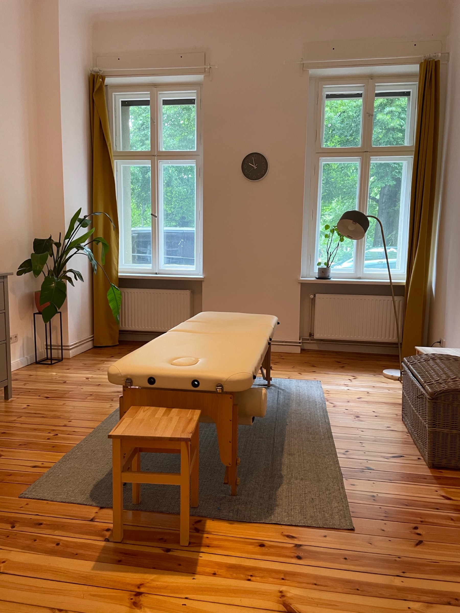

Manuelle Therapie
Manuelle Techniken zur Verbesserung der Gelenkbeweglichkeit und Behandlung von Funktionsstörungen – nach osteopathischem Konzept

Mein Name ist Nina Tomisch.
Ausgebildet in München, habe ich dort für 9 Jahre in einer Praxis für Physiotherapie gearbeitet und die fachliche Leitung übernommen.
Außerdem habe ich einige Monate in Lyon, Frankreich verbracht und dort in verschiedenen Praxen meine Kenntnisse als Physiotherapeutin vertieft.
Sie als Mensch stehen im Mittelpunkt meiner Therapie – mit Ihren individuellen Beschwerden, Bedürfnissen und Zielen.
Durch die Kombination aus physiotherapeutischer Fachkompetenz und heilpraktischem Wissen entwickle ich ein ganzheitliches, auf Sie persönlich abgestimmtes Behandlungskonzept.
Ich möchte Ihre Symptome nicht nur lindern, sondern deren Ursachen verstehen und gezielt behandeln.
Außerdem unterstütze ich Sie dabei, langfristig selbst aktiv zu Ihrer Gesundheit beizutragen.

Manuelle Techniken zur Verbesserung der Gelenkbeweglichkeit und Behandlung von Funktionsstörungen – nach osteopathischem Konzept

Gezielte Begleitung vor und nach operativen Eingriffen

Behandlung von Funktionsstörungen des Kiefergelenks sowie möglichen begleitenden Beschwerden wie Kopfschmerzen, Schwindel und Tinnitus

Akute und chronische Schmerzen verstehen und ganzheitlich behandeln

Erarbeiten individueller Trainingspläne zur Verbesserung von Haltung, Kraft und Stabilität

telefonisch oder per Mail
Gemeinsam finden wir einen geeigneten Termin